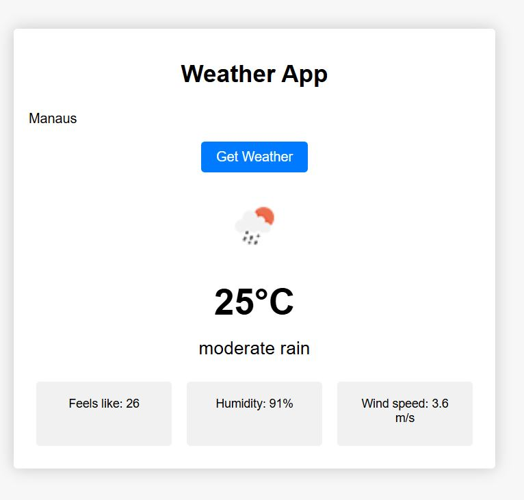
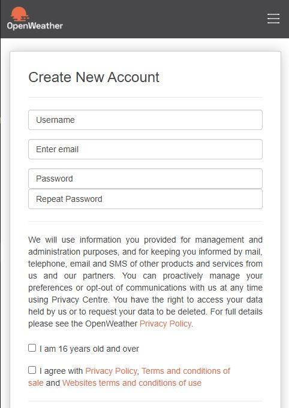

Descrição do Projeto

Já imaginou criar um aplicativo de clima do zero? 🌎☀️ Neste vídeo, você aprenderá a desenvolver um app de previsão do tempo usando JavaScript e a API OpenWeatherMap! Vamos construir uma interface interativa onde o usuário pode digitar o nome de uma cidade e obter informações detalhadas sobre o clima, incluindo temperatura, umidade e condições atmosféricas. Além disso, vamos usar ícones dinâmicos para representar o clima atual e aprender a tratar erros ao buscar dados da API.
🔥 O que você vai aprender?
✅ Como integrar a API OpenWeatherMap em um projeto JavaScript
✅ Como buscar e exibir dados meteorológicos em tempo real
✅ Como usar ícones dinâmicos para representar o clima
✅ Como tratar erros com try...catch para uma experiência fluida
💡 Tecnologias utilizadas: JavaScript, OpenWeatherMap API, HTML, CSS
📌 Se inscreva no canal e ative o sininho 🔔 para mais tutoriais incríveis! 🚀
Estrutura do HTML
Vamos iniciar o nosso projeto pelo HTML. A página vai ser bastante simples com uma caixa de texto para que possamos digitar o nome da cidade que queremos ver o clima atual e um botão para disparar a consulta.
Depois vamos ter um espaço para colocar uma imagem representando o clima atual e alguns detalhes como sensação térmica, humidade e velocidade do vento.
<!DOCTYPE html>
<html lang="en">
<head>
<meta charset="UTF-8" />
<meta http-equiv="X-UA-Compatible" content="IE=edge" />
<meta name="viewport" content="width=device-width, initial-scale=1.0" />
<title>Weather App</title>
<link rel="stylesheet" href="style.css" />
</head>
<body>
<div class="container">
<h1>Weather App</h1>
<form>
<input type="text" id="city-input" placeholder="Enter City" />
<input type="submit" value="Get Weather" />
</form>
<div id="weather-data">
<div class="icon">
<!-- Imagem dinamica representando o clima:
<img src="http://openweathermap.org/img/wn/01d.png" alt="Weather Icon">
-->
</div>
<div class="temperature"></div>
<div class="description"></div>
<div class="details">
<!-- Detalhes do clima:
<div>Feels like: 23°C</div>
<div>Humidity: 40%</div>
<div>Wind speed: 5 m/s</div>
-->
</div>
</div>
</div>
<script src="index.js"></script>
</body>
</html>
API OpenWeather
Para acessar a API OpenWeather precisamos fazer um cadastro no site.

Acessando API
O código implementa uma aplicação simples de previsão do tempo que permite ao usuário digitar o nome de uma cidade e visualizar informações climáticas em tempo real usando a API do OpenWeatherMap.
📌 Declaração de Variáveis
No início do código, definimos três constantes que armazenam elementos do HTML:
🔑 Chave da API
const apikey = "ece54d0e9bcc6551e6a6a66bf8574931";
- A API Key é um código de autenticação que permite acessar os dados da API do OpenWeatherMap.
- Esse código deve ser mantido em segredo (o ideal é armazená-lo em variáveis de ambiente para segurança).
📌 Seleção de Elementos no HTML
const weatherDataEl = document.getElementById("weather-data");
const cityInputEl = document.getElementById("city-input");
const formEl = document.querySelector("form");
weatherDataEl→ Elemento<div>que contém os dados do clima.cityInputEl→ Campo de texto onde o usuário digita o nome da cidade.formEl→ O formulário HTML, responsável por capturar o evento de envio.
📌 Adicionando um Evento ao Formulário
formEl.addEventListener("submit", (event) => {
event.preventDefault();
const cityValue = cityInputEl.value;
getWeatherData(cityValue);
});
O que acontece aqui?
1. Evento de submit: Escutamos o evento "submit" no formulário.
2. event.preventDefault(); → Evita que a página seja recarregada ao enviar
o formulário.
3. Captura do valor: Pegamos o texto digitado no campo <input>.
4. Chamamos a função getWeatherData(cityValue) → Passamos a cidade digitada
para buscar os dados da API.
📌 Função para Buscar Dados do Clima
Agora, analisemos a função getWeatherData() que faz a requisição à API:
async function getWeatherData(cityValue) {
- A função é assíncrona (
async) porque faz uma requisição externa (demorada), e precisamos esperar a resposta antes de continuar.
Vamos consultar a API para ver como podemos construir a nossa requisição. Existem diversas formas de utilizar a API e uma delas é consultar através do nome da cidade.
const response = await fetch(
`https://api.openweathermap.org/data/2.5/weather?q=${cityValue}&appid=${apikey}&units=metric`
);
fetch()→ Realiza uma solicitação HTTP para obter os dados da cidade informada.- URL de Requisição
q=${cityValue}→ Nome da cidade fornecida pelo usuário.appid=${apikey}→ Chave da API para autenticação.units=metric→ Define que a unidade de temperatura será Celsius.
📌 5. Verificando a Resposta
if (!response.ok) {
throw new Error("Network response was not ok");
}
- Verifica se a resposta foi bem-sucedida (
response.ok). - Se houver erro (exemplo: cidade inválida ou problema na API), um erro é gerado com
throw new Error().
📌 6. Convertendo os Dados da API
const data = await response.json();
- Converte a resposta da API para um objeto JavaScript (
JSON). - Esse objeto contém todas as informações meteorológicas da cidade.
O formato do JSON retornado pela API pode ser consultado aqui.
📌 Extraindo os Dados do Clima
A API retorna um JSON com muitas informações. Pegamos apenas as mais relevantes:
const temperature = Math.round(data.main.temp);
const description = data.weather[0].description;
const icon = data.weather[0].icon;
- Temperatura (
data.main.temp) → Temperatura arredondada (Math.round()). - Descrição (
data.weather[0].description) → Texto com a condição climática (ex: "nublado"). - Ícone (
data.weather[0].icon) → Código usado para exibir a imagem correspondente ao clima.
📌 8. Criando os Detalhes do Clima
const details = [
`Feels like: ${Math.round(data.main.feels_like)}`,
`Humidity: ${data.main.humidity}%`,
`Wind speed: ${data.wind.speed} m/s`,
];
- Sensação térmica (
data.main.feels_like). - Umidade do ar (
data.main.humidity%). - Velocidade do vento (
data.wind.speed).
📌 Atualizando o HTML com os Dados
Agora que temos os dados, vamos exibí-los na página:
🖼️ Exibir o Ícone do Clima
weatherDataEl.querySelector(".icon").innerHTML = `<img src="http://openweathermap.org/img/wn/${icon}.png" alt="Weather Icon">`;
- Insere uma imagem correspondente ao ícone do clima obtido da API.
🌡️ Exibir a Temperatura
weatherDataEl.querySelector(".temperature").textContent = `${temperature}°C`;
- Atualiza a temperatura no HTML.
📝 Exibir a Descrição
weatherDataEl.querySelector(".description").textContent = description;
- Exibe a descrição textual do clima.
📊 Exibir os Detalhes Adicionais
weatherDataEl.querySelector(".details").innerHTML = details.map((detail) => `<div>${detail}</div>`).join("");
- Cria um
<div>para cada detalhe (map()). - Une todos os
<div>em uma string (join("")). - Insere a string dentro da
<div class="details">.
📌 Tratamento de Erros
Se houver erro na requisição, exibimos uma mensagem na tela:
} catch (error) {
weatherDataEl.querySelector(".icon").innerHTML = "";
weatherDataEl.querySelector(".temperature").textContent = "";
weatherDataEl.querySelector(".description").textContent = "An error happened, please try again later";
weatherDataEl.querySelector(".details").innerHTML = "";
}
- Apaga as informações antigas se um erro acontecer.
- Mostra a mensagem de erro
"An error happened, please try again later".
Estilizando a Página
Estilos Globais do body
body {
margin: 0;
font-family: "Montserrat", sans-serif;
background-color: #f7f7f7;
}
margin: 0;→ Remove a margem padrão do corpo da página, evitando espaços extras ao redor do conteúdo.font-family: "Montserrat", sans-serif;→ Define a fonte principal do texto para "Montserrat". Caso ela não esteja disponível, um fallback genéricosans-serifserá utilizado.background-color: #f7f7f7;→ Define um fundo cinza claro para a página.
Estilizando a .container
.container {
background-color: #fff;
box-shadow: 0 0 20px rgba(0, 0, 0, 0.2);
margin: 0 auto;
margin-top: 50px;
text-align: center;
max-width: 600px;
border-radius: 5px;
padding: 20px;
}
background-color: #fff;→ Define o fundo do contêiner como branco.box-shadow: 0 0 20px rgba(0, 0, 0, 0.2);→ Adiciona uma sombra suave ao redor do contêiner, dando um efeito elevado.margin: 0 auto;→ Centraliza o contêiner horizontalmente.margin-top: 50px;→ Cria um espaçamento superior de 50px, afastando o contêiner do topo da página.text-align: center;→ Centraliza o conteúdo de texto dentro do contêiner.max-width: 600px;→ Limita a largura do contêiner a 600 pixels.border-radius: 5px;→ Arredonda os cantos do contêiner.padding: 20px;→ Adiciona um espaçamento interno de 20px em todas as direções.
Estilizando o form
form {
display: flex;
justify-content: center;
align-items: center;
margin-bottom: 20px;
}
display: flex;→ Usa Flexbox para organizar os elementos do formulário em linha.justify-content: center;→ Centraliza os elementos horizontalmente.align-items: center;→ Alinha os elementos verticalmente ao centro.margin-bottom: 20px;→ Adiciona um espaço abaixo do formulário.
Estilizando o Campo de Texto
form input[type="text"] {
padding: 10px;
border: none;
outline: none;
font-size: 18px;
width: 60%;
}
padding: 10px;→ Adiciona um espaçamento interno para melhorar a aparência.border: none;→ Remove a borda padrão do campo de entrada.outline: none;→ Remove o contorno ao focar no campo (evita o efeito de borda azul padrão).font-size: 18px;→ Define o tamanho da fonte como 18px.width: 60%;→ Define a largura do campo de entrada como 60% do contêiner pai.
Estilizando o Botão de Envio
form input[type="submit"] {
background-color: #007bff;
color: #fff;
border: none;
padding: 10px 20px;
border-radius: 5px;
font-size: 18px;
cursor: pointer;
outline: none;
transition: background-color 0.3s ease;
}
background-color: #007bff;→ Define a cor de fundo do botão como azul.color: #fff;→ Define a cor do texto como branca.border: none;→ Remove a borda do botão.padding: 10px 20px;→ Adiciona espaçamento interno.border-radius: 5px;→ Arredonda os cantos do botão.font-size: 18px;→ Define o tamanho da fonte.cursor: pointer;→ Altera o cursor para um ponteiro ao passar o mouse, indicando que o botão é clicável.outline: none;→ Remove o contorno ao focar no botão.transition: background-color 0.3s ease;→ Adiciona uma transição suave para mudanças de cor.
Efeito Hover no Botão
form input[type="submit"]:hover {
background-color: #0062cc;
}
background-color: #0062cc;→ Muda a cor de fundo quando o mouse passa sobre o botão, criando um efeito visual interativo.
Estilizando a Imagem do Ícone
.icon img {
width: 100px;
height: 100px;
background-size: contain;
background-repeat: no-repeat;
background-position: center center;
}
width: 100px;eheight: 100px;→ Define um tamanho fixo para a imagem do ícone.background-size: contain;→ Garante que a imagem seja ajustada dentro do espaço disponível sem ser cortada.background-repeat: no-repeat;→ Evita a repetição da imagem.background-position: center center;→ Centraliza a imagem dentro do espaço disponível.
Estilizando a Temperatura
.temperature {
font-size: 48px;
font-weight: bold;
margin: 20px 0;
}
font-size: 48px;→ Define um tamanho grande para a exibição da temperatura.font-weight: bold;→ Torna o texto em negrito.margin: 20px 0;→ Adiciona espaçamento acima e abaixo da temperatura.
Estilizando a Descrição
.description {
font-size: 24px;
margin-bottom: 20px;
}
font-size: 24px;→ Define um tamanho de fonte maior para a descrição do tempo.margin-bottom: 20px;→ Adiciona espaço abaixo da descrição.
Estilizando a Seção .details
.details {
display: flex;
justify-content: center;
align-items: center;
flex-wrap: wrap;
}
display: flex;→ Usa Flexbox para organizar os elementos.justify-content: center;→ Centraliza os elementos horizontalmente.align-items: center;→ Alinha verticalmente ao centro.flex-wrap: wrap;→ Permite que os elementos quebrem linha se necessário.
Estilizando os Blocos de Detalhes
.details > div {
padding: 20px;
background-color: #f1f1f1;
margin: 10px;
flex: 1;
border-radius: 5px;
text-align: center;
min-height: 45px;
}
padding: 20px;→ Adiciona espaçamento interno.background-color: #f1f1f1;→ Define um fundo cinza claro.margin: 10px;→ Adiciona espaçamento externo.flex: 1;→ Permite que os elementos cresçam proporcionalmente no espaço disponível.border-radius: 5px;→ Arredonda os cantos.text-align: center;→ Centraliza o texto.min-height: 45px;→ Define uma altura mínima.
Responsividade (Media Query)
@media (max-width: 768px) {
form {
flex-direction: column;
}
form input[type="text"] {
width: 100%;
margin-bottom: 10px;
}
}
- Para telas menores que 768px:
- O formulário passa a ter
flex-direction: column;, colocando os elementos em coluna. - O campo de entrada ocupa toda a largura disponível e recebe
margin-bottom: 10px;para separação.
🎯 Resumo do Fluxo Completo
1️⃣ Usuário digita a cidade e pressiona "Enter".
2️⃣ JavaScript captura o evento e chama getWeatherData().
3️⃣ A API do OpenWeatherMap retorna os dados do clima.
4️⃣ JavaScript extrai as informações necessárias.
5️⃣ As informações são exibidas na tela.
6️⃣ Se houver erro, o usuário vê uma mensagem apropriada.
🚀 Melhorias Possíveis
- Validar a entrada do usuário (não permitir campos vazios).
- Adicionar mensagens de carregamento enquanto os dados estão sendo buscados.
- Melhorar a aparência do layout com mais estilos CSS.